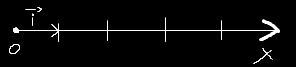
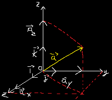
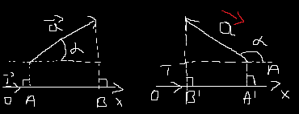

Vectors
1.1 Fundamental Notions
The vector notion, introduced by SIMON STEVIN comes from latin language and means "carrier"
Definition
Vector is a right segment oritented, characterized through the following elements:
Aplication Point (point A)
Direction (right Δ)
Sense (indicated by arrow)
module (the lenght of segment AB)
Will wiright it down with $\vec{AB}$ or $\vec{v}$
Clasification: Vectors can be:
connected (fixed point of application)
sliding (the right suport is fixed, but the point of application can be moved along this line
Liber (the point of application can be move anywhere in space, the right suport will remain paralel with the same line
Definition: The versor (unitar vector) of a vector $\vec{a}$ it's a vector with sens and direction of vector $\vec{a}$, and the module equal with unity: $\vec{a} = a \bullet \vec{u}$
The versor of axe it is a vector with module equal with unity of lenght on axe; the direction the same with axe; sense the same with sense pozitiv of axe; the point of application in origin axe (O).

For the axes Ox, Oy and Oz will write down the vector as $\vec{i}$, $\vec{j}$ and $\vec{k}$
The analitic expresion of vector
Any vector on the axe Ox can be wright as: $\vec{a} = a_x * \vec{i}$
where - $\vec{a_x}$ it is the proiection of vector $\vec{a}$ on axe Ox.
In a sistem ortogonal of axes Oxyz, an vector $\vec{a}$ can be write as:
$\vec{a} = \vec{a_x} + \vec{a_y} + \vec{a_z}$
$\vec{a} = a_x* \vec{i} + a_y * \vec{j} + a_k * \vec{k}$
with $a = \sqrt{a^2_x + a^2_y + a^2_z}$

Where $\vec{a_x},\vec{a_y} and \vec{a_z}$ are componets of vector $\vec{a}$ on the 3 axes $a_x,a_y,a_z$ witch represend the proiections of vector $\vec{a}$ on Ox,Oy,Oz
The proiection of $\vec{a}$ on the axe Ox of versor $\vec{i}$, is the number real $a_x$ defined:
$a_x = \vec{a} * \vec{i} = a * cos\alpha$
Where $\alpha$ is the angle formed of the vector $\vec{a}$ with axe Ox.
If $-\frac{\pi}{2} < \alpha < \frac{\pi}{2}$, the proiection will be pozitive, else if $\frac{\pi}{2} < \alpha < \frac{3\pi}{2}$ will be negative
